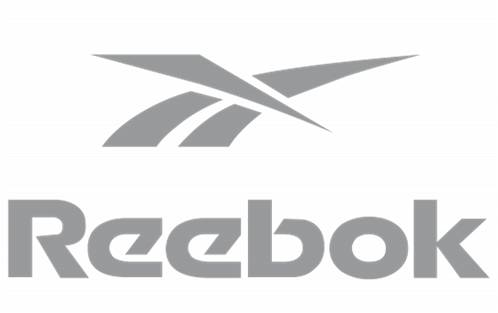
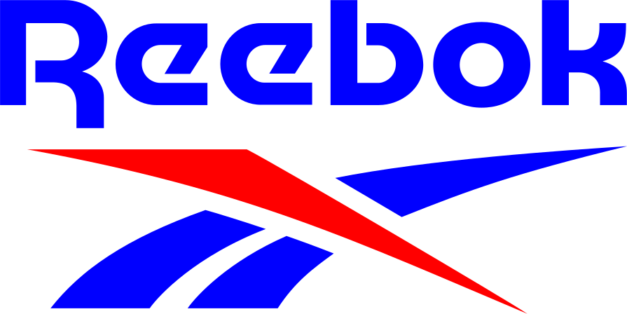
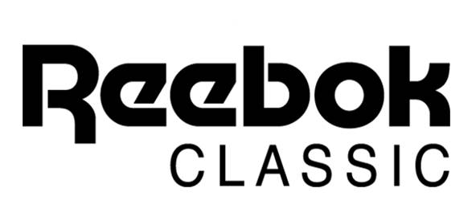
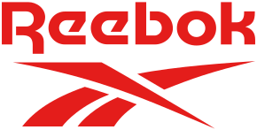

리복 Reebok
리복(Reebok)은 영국 볼턴에서 시작된 운동화·스포츠 의류 브랜드이다.
최종 업데이트
리복은 어떤 브랜드인가
리복은 1958년 영국 볼턴 인근 베리에서 조 포스터(Joe Foster)와 형 제프 포스터 형제가 세운 스포츠 브랜드로, 그 뿌리는 1895년 할아버지 조지프 윌리엄 포스터가 세운 육상화 제조사 J.W. 포스터 앤드 선스로 거슬러 올라간다.
초기 스파이크 러닝화로 출발해 1980년대 에어로빅 열풍과 함께 미국 시장을 장악했다. 두 번의 큰 전환점은 2005~2006년 독일 아디다스의 약 38억 달러 인수, 그리고 2021~2022년 미국 어센틱 브랜즈 그룹(ABG)으로의 약 25억 달러 매각이다.
현재는 ABG 산하 라이선싱 기반 브랜드로 운영된다.
리복은 어떻게 봐야 할까
리복의 위치는 경쟁사와의 대비에서 분명해진다. 나이키가 농구·스타 마케팅, 아디다스가 축구·러닝을 축으로 삼는 반면, 리복은 1980년대 에어로빅 붐을 선점하며 '피트니스' 정체성을 구축했고 2010년대에는 크로스핏·UFC 파트너십으로 기능성 트레이닝 시장에 집중했다.
가장 중요한 함의는 소유 구조 변화다. 아디다스는 약 38억 달러에 사들인 리복을 2021~2022년 ABG에 약 25억 달러(약 21억 유로)로 넘기며 약 13억 달러가량 손실을 감수했는데, 이는 두 거대 브랜드를 한 지붕에 두는 전략이 실패했음을 보여준다.
ABG 인수 후 리복은 직접 생산·재고 부담을 줄이고 지역별 리테일 파트너에게 라이선싱하는 구조로 전환했다. 한국에서는 1980~90년대 클래식 레더와 펌프로 큰 인기를 누렸고, 현재는 클래식 라인을 중심으로 레트로 수요가 이어진다.
리복은 어떻게 시작되고 성장했나
리복의 출발점은 러닝화 장인 가문이다. 1895년 14세의 조지프 윌리엄 포스터가 볼턴에서 손바느질로 스파이크 육상화를 만들었고, 그가 만든 신발은 1924년 파리 올림픽에서 금메달리스트들이 신어 영화 '불의 전차'로도 기억된다.
1958년 그의 손자 조 포스터가 형 제프와 함께 새 회사를 세웠고, 남아프리카 영양 이름을 딴 '리복'이라는 브랜드명이 1960년 확정됐다. 1979년 미국 시장에 진출했고, 1982년 여성용 에어로빅화 '프리스타일'이 폭발적으로 팔리며 단숨에 대형 브랜드로 도약했다.
1989년 11월에는 공기 주입식 착화 시스템을 적용한 '펌프'를 약 170달러에 선보여 농구화 시장에 충격을 줬다. 이후 두 번의 전환점이 회사의 운명을 갈랐다.
2005년 발표·2006년 완료된 아디다스의 약 38억 달러 인수로 글로벌 2위 연합에 편입됐고, 2021~2022년에는 어센틱 브랜즈 그룹에 약 25억 달러로 매각돼 다시 독립 브랜드 체제로 돌아왔다.
리복의 브랜드 아이덴티티는 무엇인가
리복의 핵심 가치는 신체적·정신적·사회적 변화를 뜻하는 '피트니스를 통한 변신'이다. 시각 정체성은 1986년 도입된 벡터 로고가 대표하며, 1980~90년대 운동화 문화를 상징하는 사선 그래픽으로 자리 잡았다.
2014년에는 세 변이 변화를 의미하는 붉은 삼각형 '델타' 로고를 크로스핏 협업과 함께 내세웠으나, 소비자가 벡터 마크에 더 강하게 반응하자 2019년 벡터 로고를 핵심 정체성으로 복원했다. 타깃은 트레이닝과 일상 레트로 스니커를 함께 즐기는 폭넓은 연령층이며, 브랜드 보이스는 진정성·헤리티지·도전을 강조한다.
리복의 대표 제품과 서비스는 무엇인가
제품군은 트레이닝화, 러닝화, 농구화, 라이프스타일 스니커, 의류로 구성된다. 시그니처 모델로는 1989년 공기 주입식 펌프, 스테디셀러 클래식 레더, 테니스 헤리티지의 클럽 C, 끈 없는 미래적 디자인의 인스타펌프 퓨리, 그리고 에어로빅 붐을 일으킨 프리스타일이 있다.
가격대는 보급형 클래식이 십만 원 안팎, 한정·협업판이나 빈티지는 수십만 원대까지 폭넓게 형성된다. 유통은 자사몰과 지역별 라이선스 파트너의 매장·온라인 채널을 통해 이뤄진다.
리복은 지금 어떤 상태인가
리복은 2022년부터 미국 어센틱 브랜즈 그룹(ABG) 소유다. 본사는 미국 매사추세츠주 보스턴 시포트 지구에 있으며, 직접 생산보다 지역 리테일 파트너에게 권리를 빌려주는 라이선싱 모델로 운영된다.
2023년 10월에는 샤킬 오닐이 농구 부문 사장, 앨런 아이버슨이 부사장으로 합류했고 2024년 앤절 리스를 시그니처 모델 얼굴로 영입했다. 라이선싱 매출은 2024년 약 3억 달러로 전년 대비 9% 늘었고, 영업이익도 증가했다.
소매 기준 전체 거래 규모는 경영진이 약 50억 달러 수준으로 언급했으나 세부 국가별 수치는 미공개다.
리복 연혁 — 주요 사건은 언제였나
리복 로고는 어떻게 변해왔나

BI/CI 아카이브보관 이미지 1
BI/CI 아카이브 2보관 이미지 2
BI/CI 아카이브 3보관 이미지 3
BI/CI 아카이브 4보관 이미지 4자주 묻는 질문
리복는 어느 나라 브랜드인가요?
리복는 영국의 스포츠·아웃도어 브랜드입니다.
리복는 언제 설립되었나요?
리복는 1895년 설립되었습니다.
리복의 브랜드 아이덴티티는 무엇인가요?
리복의 핵심 가치는 신체적·정신적·사회적 변화를 뜻하는 '피트니스를 통한 변신'이다.
리복의 대표 제품은 무엇인가요?
제품군은 트레이닝화, 러닝화, 농구화, 라이프스타일 스니커, 의류로 구성된다.
리복는 어느 기업이 소유하고 있나요?
리복은 2022년부터 미국 어센틱 브랜즈 그룹(ABG) 소유다.
리복의 창업자는 누구인가요?
리복의 창업자는 Joseph William Foster입니다(위키데이터 기준).
리복의 본사는 어디에 있나요?
리복의 본사는 보스턴에 있습니다(위키데이터 기준).
출처와 검증
리복 관련 참고: 공식 웹사이트 · 위키데이터 Q466183 · 한국어 위키백과 · 영어 위키백과. 브랜드명은 한글과 원어를 함께 표기하되 데이터에 없는 표기는 만들지 않습니다. 기원 국가·설립연도는 검수된 정의문에서 확인된 값을 우선하고, 없을 때만 공식 웹사이트 URL이 일치하는 위키데이터 개체의 값을 씁니다. 위키데이터 값은 2026-09-07 기준입니다.